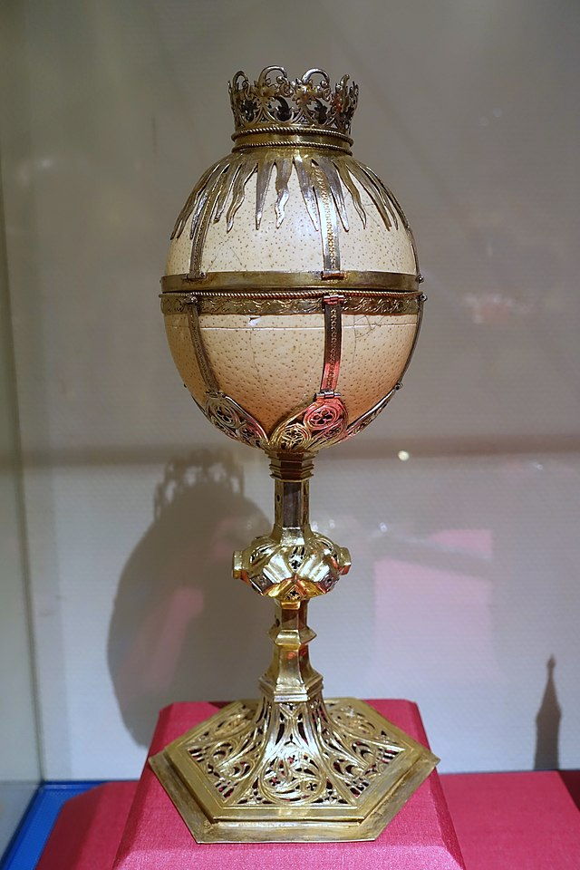
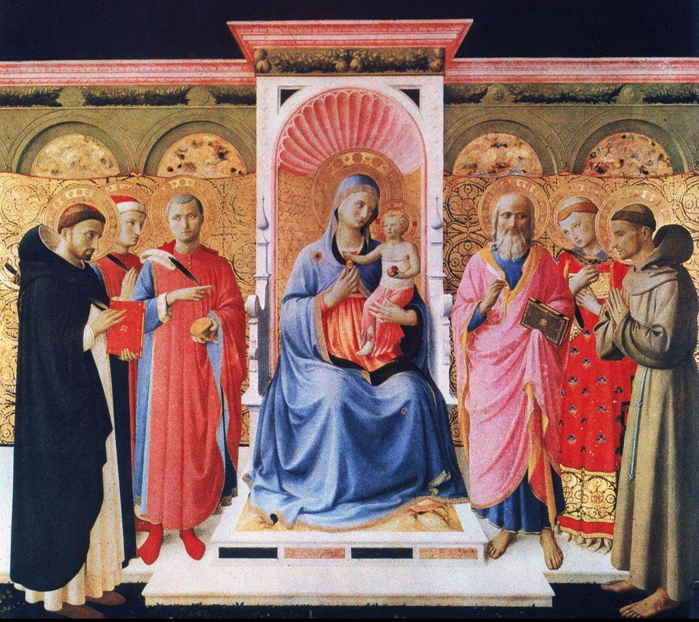
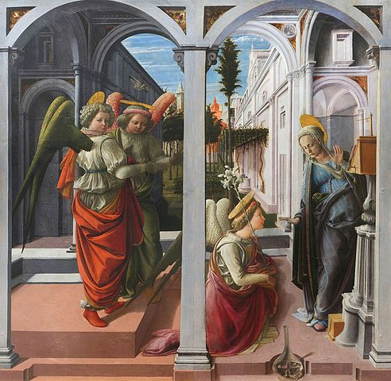

<!DOCTYPE html>
<html lang="en">
<head>
	<meta charset="utf-8">
	<meta name="description" content="">
	<meta name="author" content="">
	<meta name="viewport" content="width=device-width, initial-scale=1.0, user-scalable=no">
	<title>San Lorenzo</title>

	<link rel="stylesheet" type="text/css" href="../../build/potree/potree.css">
	<link rel="stylesheet" type="text/css" href="../../libs/jquery-ui/jquery-ui.min.css">
	<link rel="stylesheet" type="text/css" href="../../libs/openlayers3/ol.css">
	<link rel="stylesheet" type="text/css" href="../../libs/spectrum/spectrum.css">
	<link rel="stylesheet" type="text/css" href="../../libs/jstree/themes/mixed/style.css">
</head>

<body>
	<script src="../../libs/jquery/jquery-3.1.1.min.js"></script>
	<script src="../../libs/spectrum/spectrum.js"></script>
	<script src="../../libs/jquery-ui/jquery-ui.min.js"></script>
	<script src="../../libs/other/BinaryHeap.js"></script>
	<script src="../../libs/tween/tween.min.js"></script>
	<script src="../../libs/d3/d3.js"></script>
	<script src="../../libs/proj4/proj4.js"></script>
	<script src="../../libs/openlayers3/ol.js"></script>
	<script src="../../libs/i18next/i18next.js"></script>
	<script src="../../libs/jstree/jstree.js"></script>
	<script src="../../build/potree/potree.js"></script>
	<script src="../../libs/plasio/js/laslaz.js"></script>
	
	<!-- INCLUDE ADDITIONAL DEPENDENCIES HERE -->
	<!-- INCLUDE SETTINGS HERE -->
	
	<div class="potree_container" style="position: absolute; width: 100%; height: 100%; left: 0px; top: 0px; ">
		<div id="potree_render_area" style="background-image: url('../../build/potree/resources/images/background.jpg');"></div>
		<div id="potree_sidebar_container"> </div>
		<span style="position: absolute; bottom: 10px; left: 50%; transform: translateX(-50%); z-index: 10000">
				<input type="button" value="Show Inside" onclick="setButton1()"/>
				<input type="button" value="Show Outside" onclick="setButton2()"/>
				<input type="button" value="Clip None" onclick="setButton3()"/>
			</span>
	</div>
	

	<script>
	
		window.viewer = new Potree.Viewer(document.getElementById("potree_render_area"));

		viewer.useHQ = true; 
		viewer.setEDLEnabled(false);
		viewer.setFOV(60);
		viewer.setPointBudget(6 * 1000 * 1000);
        viewer.loadSettingsFromURL();
        viewer.scene.view.position.set(1.966, 8.216, -6.433);
        viewer.scene.view.lookAt(1.652, 6.713, -6.532);

		<!-- INCLUDE SETTINGS HERE -->
		viewer.loadSettingsFromURL();
		
		viewer.setDescription("");
		viewer.scene.camera;
		viewer.setDescription("Point cloud by <a target='_blank' href='https://florenceasitwas.wlu.edu/'>Florence As It Was</a>");
		viewer.loadGUI(() => {
			viewer.setLanguage('en');
			$("#menu_appearance").next().show();
			$("#menu_tools").next().show();
			$("#menu_clipping").next().show();
			viewer.toggleSidebar();
		});
		
		

		Potree.loadPointCloud("../../pointclouds/oldsacristy/metadata.json", "STrinita", e => {
			let scene = viewer.scene;
			let pointcloud = e.pointcloud;

            scene.addPointCloud(pointcloud);
			let material = pointcloud.material;
			material.size = 1;
			material.pointSizeType = Potree.PointSizeType.ADAPTIVE;
			material.shape = Potree.PointShape.SQUARE;
			material.activeAttributeName = "rgba";
           
            

			//viewer.fitToScreen();
		});

		{ // ANNOTATIONS
			let scene = viewer.scene;

			
			//start annotation			
			scene.annotations.add(new Potree.Annotation({
				position: [-0.145, 1.215, -9.317],
				title: "Tomb of Cosimo de' Medici",//text between quotes is the annotation title				
				cameraPosition: [-0.290, 5.484, -7.699],//this is where the viewer will be directed when annotation is clicked
				cameraTarget: [-0.755, 1.033, -7.332],
				//Below is the text for the annotation.
				description: `<div style="overflow:scroll ; height:300px">Cosimo de’ Medici was buried in the crypt of San Lorenzo in 1464, underneath a
				decorative slab at the crossing of the church. Commissioned by his son, Piero, and constructed
				by Andrea del Verrocchio, the tomb reflects Cosimo's power and influence in Florence.
				However, it is a floor tomb – the type usually used by families of modest status – and not a wall
				monument, which would have been typical for powerful individuals of the time.
				<br><br>
				However, its humble design is mitigated by its placement in the church. Located in front
				of the high altar underneath the central dome (much like his father's), the tomb exhibits his status
				and support for the church. Believing it would benefit his soul, it was placed at the center of
				spiritual focus. Importantly, Cosimo banned other families from creating similar floor tombs in
				San Lorenzo, making his the only such marker in the church.
				<br><br>
				The slab is primarily made of white marble with green and red porphyry. The materials
				were very expensive and difficult to work with. The Medici coat of arms is placed around the
				center circle, with a cruciform inside it, appearing to be a mix of a Greek cross and Solomon's
				knot, the latter of which was used to symbolize eternity and to unify man with the divine.
				<br><br>
				Three bronze circular grates surround the slab, referencing the way in which corpses were
				dropped into crypts from the nave after funeral services in the Middle Ages. The fourth circle,
				closest to the high altar, has been covered by stairs.
				<br><br>
				The inscription on his tomb reads Cosmus Medices hic situs est Decreto Publ. Pater
				Patriae. Vix Ann. 75. mens. 3 dies 20, which translates to “Here lies Cosimo de’ Medici, by
				public decree. Father of his country. He lived for 75 years, 3 months, and twenty days.”
				<br><br>
				Bibliography

				Evelyn Diane, "The Medici, Verrocchio, and San Lorenzo" (2004). LSU Master' s Theses. 1894.
				https://repository.lsu.edu/gradschool_theses/1894

				William Dunaway</div>`,
				visible: false,

			}));
			//end annotation
			
			//start annotation
			scene.annotations.add(new Potree.Annotation({
				position: [-1.745, -11.983, -4.665],
				title: "Architecture of the Old Sacristy",
				cameraPosition: [-4.945, -1.693, -2.873],
				cameraTarget: [-4.815, -4.664, -3.016],
				description: `<div style="overflow:scroll ; height:300px">Filippo Brunelleschi was the architect Giovanni di Bicci de' Medici appointed to design
				the Old Sacristy of San Lorenzo. It was completed in 1428 and served as the burial place of
				Giovanni when he died in 1429. The design is typical of Renaissance architecture: symmetrical,
				proportionate, and mathematical. The chapel is a perfect square, with each side wall equaling the
				width of the other three. The height of each wall is half the length of the width. The sacristy’s
				height can be divided into thirds, referencing The Holy Trinity: The Father, The Son, and the
				Holy Spirit. The large, fluted columns framing the chapel feature composite capitals with
				elaborate acanthus leaves and scrolls, paying homage to Roman architecture.
				<br><br>
				The dome has twelve sections and twelve windows, referencing the twelve disciples. A
				window is placed in the center of the dome directly above Giovanni di Bicci’s tomb for two
				reasons. One is to allow his passage into heaven and the other is to designate Giovanni as a
				thirteenth disciple.
				<br><br>
				The location of his tomb in the middle of the room resembles The Church of The Holy
				Sepulchre in Jerusalem, where Jesus is thought to have been buried and rose from the dead. The
				Church of The Holy Sepulchre encloses the tomb of Christ, allowing visitors to walk around the
				tomb, much like Giovanni's tomb in the Old Sacristy.
				<br><br>
				One of the most noticeable designs of the Old Sacristy is the ceiling of the central dome
				over Giovanni’s tomb. It features a hemispherical umbrella of twelve sections supported by
				pendentives. The mini-dome directly above the altar symbolizes the heavens. In 1442, a fresco
				was painted of the constellations in the dome. The fresco is thought to point to the day Cosimo
				de’ Medici united the Roman Catholic and Greek Orthodox churches in 1439.
				<br><br>
				Brunelleschi was considered the most famous architect of the time, revolutionizing the
				way buildings are designed and constructed. His design of the Old Sacristy was clearly
				intentional as a way to commemorate the life of Giovanni di Bicci.
				<br><br>
Bibliography
<br><br>
				Clinton, Jessica Lynne, "The ornamentation of Brunelleschi's Old Sacristy of San Lorenzo in
				Florence" (2010). LSU Master' s Theses.
				3506.https://repository.lsu.edu/gradschool_theses/3506.
<br><br>
				Saalman, Howard. Filippo Brunelleschi The Buildings (1993).
<br><br>
				William Dunaway</div>`,
				visibility: false
			}));
			//end annotation
			
		//start annotation
			scene.annotations.add(new Potree.Annotation({
				position: [-2.248, -0.502, 2.324],
				title: "John the Evangelist Narratives",
				cameraPosition: [-5.466, -5.517, -0.320],
				cameraTarget: [-5.446, -5.503, -0.310],
				description: `<div style="overflow:scroll ; height:300px">Cosimo de’ Medici commissioned Donatello to decorate the Old Sacristy in 1435.
				Notably, there are four stucco bas reliefs in the triangular pendentives that depict episodes from
				the life of John the Evangelist: Raising of John Evangelist, John Evangelist and Patmos,
				Martyrdom of John Evangelist, and John Evangelist Apotheosis.
<br><br>
				The first of four scenes begins with the raising of Drusiana. Depicted is the funeral
				procession of Christian woman, Drusiana, in which she was called upon by John the Evangelist
				and brought back to life. Although Donatello colors Drusiana black to bring attention to her, it
				must be noted that the color black can also be a way to underscore the figure’s death.
<br><br>
				The second scene depicts John the Evangelist laying on ground of the island of Patmos.
				There, as the text of his Book of Revelation indicates, he receives visions of the end of days. The
				second haloed figure, God the Father holds a scythe as he watches over John, while a dragon
				flies overhead; good fights evil, but death ultimately wins.
<br><br>
				The third scene depicts the Martyrdom of John the Evangelist. Persecuted by the
				Romans, John was thrown into a vat of boiling oil. Here John appears to pray for salvation as an
				angel to the left flies down toward him. Again, Donatello uses black, this time for the vat of oil,
				to emphasize the key component of the story.
<br><br>
				The final scene depicts the Apotheosis of John the Evangelist. Spectators watch as John
				is pulled into heaven through an elaborate architectural setting by Christ and the Virgin Mary,
				whose features have deteriorated over time.
<br><br>
				The themes of death and resurrection are appropriate for this burial chapel. John the
				Evangelist, the patron saint of Giovanni di Bicci, surely serves as the Medici patriarch’s
				surrogate, and Donatello’s narrative tells the story of these two protagonists as servants of God
				and servants of the people.
<br><br>
Bibliography
<br><br>
				Crum, Roger J. “Donatello’s ‘Ascension of St. John the Evangelist’ and the Old Sacristy as
				Sepulchre.” Artibus et Historiae 16, no. 32 (1995): 141–61.
				https://doi.org/10.2307/1483566.
<br><br>
				Kent, Dale. “Building for the Honor of God,” Cosmo de’ Medici (London and New Haven,
				2004). 179-97.
<br><br>
				Saalman, Howard. Filippo Brunelleschi The Buildings (A. Zwemmer Ltd, 1993).
<br><br>
				William Dunaway</div>`,
			}));
			//end annotation
			
	//start annotation
			scene.annotations.add(new Potree.Annotation({
				position: [-2.974, -12.276, 1.842],
				title: "John the Evangelist Writing at His Desk",
				cameraPosition: [-5.115, -6.153, 1.752],
				cameraTarget: [-5.032, -12.454, 0.116],
				description: `<div style="overflow:scroll ; height:300px">Donatello's St. John the Evangelist is one of five roundels in the Old Sacristy that depict
				St. John the Evangelist. The other four roundels represent John Evangelist on Patmos, John
				Evangelist on Martyrdom, John Evangelist Apotheosis, and John Evangelist raises Drusiana. St.
				John the Evangelist. These roundels are composed of polychrome stucco and are placed just
				below the Old Sacristy dome. These large roundels each have a diameter of 215 centimeters.
<br><br>
				Commissioned by Cosimo in 1435 to adorn the sacred space designed by Filippo
				Brunelleschi, this piece exemplifies the Medici family's profound impact on the cultural and
				spiritual landscape of Florence. Donatello's portrayal of St. John Evangelist showcases his
				unparalleled skill in capturing spiritual depth. The lifelike realism of St. John's figure, robed and
				seated at a desk, both elevates the aesthetic appeal of the Old Sacristy and creates a connection
				between the viewer and the subject.
<br><br>
				Cosimo de' Medici's patronage of Donatello's St. John reflects his family's commitment
				to promoting devotional and cultural excellence. By commissioning this work of art, Cosimo
				sought to assert both Medicean authority and his personal status within the Church and among
				the people of Florentine. The placement of Donatello's sculpture within the Old Sacristy was
				strategic, positioning it in a space intimately associated with the Medici family's private religious
				practices. As a site of political power, the Old Sacristy served as a testament to Medici authority
				and influence.
<br><br>
				Bibliography
<br><br>
				Crum, Roger J. “Donatello’s ‘Ascension of St. John the Evangelist’ and the Old Sacristy as
				Sepulchre.” Artibus et Historiae 16, no. 32 (1995): 141–61. https://doi.org/10.2307/1483566.
<br><br>
				Tarr, Roger. “Brunelleschi and Donatello: Placement and Meaning in Sculpture.” Artibus et
				Historiae 16, no. 32 (1995): 101–40. https://doi.org/10.2307/1483565.
<br><br>
				Valentina Nunez</div>`,
			}));
			//end annotation	
			
		//start annotation
			scene.annotations.add(new Potree.Annotation({
				position: [5.935, -4.284, -7.630],
				title: "Tabernacles",
				cameraPosition: [4.337, 1.472, -6.904],
				cameraTarget: [4.521, -9.874, -7.438],
				description: `<div style="overflow:scroll ; height:300px">The Tabernacles in the Old Sacristy of San Lorenzo housed sacred relics and were
				commissioned by Cosimo de' Medici, showcasing his patronage of art and religion. A relic is a
				tangible object of the past that holds religious significance: they can be bits and pieces of a
				saint’s bones, articles of clothing worn by holy figures, or objects they once touched.
				Tabernacles were often created to hold, preserve, and frame these important objects, which were
				required to appear on every consecrated altar in Christendom. By holding these precious relics,
				they transformed spaces into places of spiritual contemplation and reverence.
<br><br>
				Cosimo de' Medici's commissioning of these Tabernacles was a clear display of his
				personal piety and reverential devotion, but it was also a strategic move to illustrate his family’s
				presence in San Lorenzo. Cosimo sought to ground the Medici dynasty in both a religious and a
				socio-political sense, and the Old Sacristy became not only a place of worship, but also a
				testament to Medici prestige. Cosimo de' Medici's association with the Tabernacles extends
				beyond mere patronage; it embodies his multifaceted role as a statesman, financier, and cultural
				contributor.
<br><br>
				Bibliography
<br><br>
				Strocchia, Sharon T. “Cosimo de’ Medici and the Florentine Renaissance: The Patron’s Oeuvre.”
				Renaissance Quarterly, vol. 54, no. 4, Renaissance Society of America, 2001, pp. 1593–95,
				https://doi.org/10.2307/1262169.
<br><br>
				DAVIES, PAUL. “Saving the Soul of Giovanni Di Bicci de’ Medici: Function and Design in the Old
				Sacristy of San Lorenzo.” Architectural History 62 (2019): 1–37.
				https://www.jstor.org/stable/26848752.
<br><br>
				Valentina Nunez</div>`,
			}));
			//end annotation	
			
			//start annotation
			scene.annotations.add(new Potree.Annotation({
				position: [-1.192, -11.852, 2.974],
				title: "Ostrich Eggs",
				cameraPosition: [-1.537, -4.989, -8.843],
				cameraTarget: [-3.327, -13.830, -2.865],
				description: `<div style="overflow:scroll ; height:300px">Ostrich eggs were traditionally suspended from the ceiling of the Old Sacristy to
				symbolize purity, fertility, and divine protection. As potent symbols of rebirth and renewal, they
				evoked themes of spiritual regeneration and the promise of salvation, enriching the sacred
				ambiance of the space. The ostrich eggs' luminescent quality, when illuminated by candlelight,
				created a mesmerizing effect, which heightened the mystical aura of the Old Sacristy. By
				incorporating these symbolic elements into the decorative scheme of the Old Sacristy, Cosimo
				strived to ingrain the sacred space with layers of meaning and spiritual resonance. The presence
				of ostrich eggs within the Medici family's private chapel served as a reflection of their piety and
				their role as benefactors of the Church.
<br><br>
				The ostrich eggs' placement within the Old Sacristy reflects the Medici dynasty's
				sophisticated understanding of symbolism and visual language. The Old Sacristy served as a
				stage for the Medici family to assert their authority and shape the cultural identity of Florence.
				The inclusion of ostrich eggs in the decorative scheme of the space further reinforced the Medici
				dynasty's connection to Christian tradition and its role as custodians of religious heritage.
<br><br>
				According to Durandus, ostrich eggs were often hung in churches as marvelous rarities to
				attract and influence people to come to the church. Durandus also offers another explanation
				stating that, “some say that the ostrich abandons her eggs, but returns when she sees a certain
				star, as sinful man was first abandoned by God and then again illuminated by him, and that
				shows how we may lose God unless this star, signifying the mercy of Holy Spirit, reminds us to
				do good works and so return to God.” Through their patronage of symbolic objects like ostrich
				eggs, the Medici contributed to the creation of a visual language that resonated with
				contemporary audiences and conveyed complex theological concepts in accessible ways.
<br><br>
				Bibliography
<br><br>
				Ancona, Mirella Levi d’, and Creighton Gilbert. “Letters to the Editor.” The Art Bulletin 35, no.
				4 (1953): 329–30. https://doi.org/10.2307/3047521.
<br><br>
				DAVIES, PAUL. “Saving the Soul of Giovanni Di Bicci de’ Medici: Function and Design in the
				Old Sacristy of San Lorenzo.” Architectural History 62 (2019): 1–37.
				https://www.jstor.org/stable/26848752.
<br><br>
				Gilbert, Creighton. “‘The Egg Reopened’ Again.” The Art Bulletin 56, no. 2 (1974): 252–58.
				https://doi.org/10.2307/3049230.
<br><br>
<br>
				Valentina Nunez</div>`,
							}));
			//end annotation	
			
			//start annotation
			scene.annotations.add(new Potree.Annotation({
				position: [3.499, -5.529, -6.515],
				title: "Annalena Altarpiece",
				cameraPosition: [3.876, 1.112, -6.408],
				cameraTarget: [4.311, -4.625, -6.402],
				description: `<div style="overflow:scroll ; height:300px">The Annalena Altarpiece now resides in the Museo di San Marco in Florence, while its earliest
				documented location is the Dominican convent of San Vincenzo d’Annalena. However, since the
				panel contains the specific patron saints of members of the Medici family, William Hood argues
				that the most probable original location for the piece was the Medici transept chapel in San
				Lorenzo.
<br><br>
				Cosimo de’Medici likely commissioned the piece around 1434 when he returned from exile. This
				scene is an early example of a “Sacra Conversazione,” in which a group of saints from different
				periods gather to celebrate the birth of Christ. Saints Peter Martyr, Cosmas, Damian, John the
				Evangelist, Lawrence, and Francis flank the Virgin Mary and the Christ child. Each of these
				saints are associated with members of the Medici family: Giovanni di Bicci, his sons Cosimo and
				Lorenzo, Cosimo’s sons Piero and Giovanni di Cosimo, and Cosimo’s nephews Francesco and
				Pierfrancesco.
<br><br>
				Fra Angelico’s altarpiece combines elements of the New Style and Gothic painting. The panel
				does not display much depth, recalling a medieval painting tradition. The gold curtain flattens the
				picture plane and pushes the figures to the front of the scene, and there is no vanishing point.
				However, the artist also displayed his understanding of the New Style, including elements like
				the classicizing throne, conch shell niche, and rectangular format. Hood describes Fra Angelico’s
				Annalena Altarpiece as the first Renaissance “pala,” a rectangular altarpiece composed of a
				single panel rather than a polyptych of multiple panels. Renaissance artists created rectilinear
				panels that appeared to be a “window into space,” with orthogonals that recede towards a
				vanishing point. The original painting likely had a classicizing frame with Corinthian columns
				that matched Brunelleschi’s design for the church.
<br><br>
Bibliography
<br><br>
				Hood, William. Fra Angelico at San Marco. New Haven: Yale University Press, 1993.
<br><br>
				Ruda, Jeffrey. “Style and Patronage in the 1440s: Two Altarpieces of the Coronation of the
				Virgin by Filippo Lippi.” Mitteilungen Des Kunsthistorischen Institutes in Florenz 28, no. 3
				(1984): 363–84. 
<br><br>
<br>
				Madeleine Lee</div>`,
			}));
			//end annotation	
			
			//start annotation
			scene.annotations.add(new Potree.Annotation({
				position: [11.689, 1.709, -4.233],
				title: "Martelli Annunciation",
				cameraPosition: [3.100, 23.561, -0.796],
				cameraTarget: [3.777, 7.048, -2.986],
				description: `<div style="overflow:scroll ; height:300px">The Carmelite friar Fra Filippo Lippi likely completed the Martelli Annunciation between 1442-
				45 for Niccolò Martelli, a member of the wealthy Florentine banking family. The Martelli were
				close neighbors of the Medici and helped fund the reconstruction of the Church of San Lorenzo.
<br><br>
				The painting adorns the altar of the Martelli Chapel and fits perfectly within the altar and the
				windowsill above, indicating an evident collaboration between Lippi and the church’s architect,
				Filippo Brunelleschi. To the right, the angel Gabriel kneels before the Virgin holding a lily that
				has been taken from the vase below. In the left portion, two angels gesture toward the scene,
				while the angel on the left gazes at the viewer. The setting behind the figures resembles a
				cloister, but the receding architecture also suggests a nave with side aisles. If this interpretation is
				correct, viewers imagine themselves experiencing the event from the choir, where Annunciation
				renditions were often performed in churches.
<br><br>
				This Renaissance “pala” demonstrates Lippi’s understanding of architecture as a stage upon
				which figures can interact. The rectangular frame becomes a window onto space, allowing
				viewers to imagine the scene taking place within San Lorenzo. The figures stand on a platform at
				the front of the composition, while their feet indicate their positions in space. Behind the figures,
				the walls and classicizing arches create orthogonals that recede toward the back of the garden
				where the imagined vanishing point lies. The painted ledge at the bottom and the gray arches in
				the foreground fuse the composition with the architecture surrounding it, merging the painted
				space with the viewer’s space.
<br><br>
Bibliography
<br><br>
				Castelli, Ciro and von Teuffel, Christa Gardner. “La tavola dell'Annunciazione Martelli nella
				basilica di San Lorenzo a Firenze, con uno studio tecnico sulle modalità costruttive del
				supporto.” OPD Restauro, no. 26 (2014): 35-52.
<br><br>
				Rowlands, Eliot W. “Filippo Lippi and his Experience of Painting in the Veneto Region.”
				Artibus et Historiae 10, no. 19 (1989): 53-83.
<br><br>
<br>
				Madeleine Lee</div>`,
			}));
			//end annotation	
			
			//start annotation
			scene.annotations.add(new Potree.Annotation({
				position: [-4.390, -6.843, -8.252],
				title: "The Sacristy as a Burial Place",
				cameraPosition: [-4.930, -1.472, -6.588],
				cameraTarget: [-3.010, -12.416, -8.159],
				description: `<div style="overflow:scroll ; height:300px">Sacristies as burial places became popular in the mid 14th century as Florentine elites—
				the Rinuccini family in Santa Croce, Strozzi in Santa Trinita, and Cavalcanti in Santa Maria
				Novella—shifted toward a new way of commemoration. Church burials in family-supported
				chapels were logical choices for the wealthy, as patronizing a church was an atonement of sin
				and greatly increased the likelihood of salvation. Sacristy burials, however, provided even
				greater benefits: protection from the torment of demons, receiving prayers of the passing priests,
				and the intercession of neighboring sacred relics. They also provided a private space that could
				not be scrutinized by the general public.
<br><br>
				Burial in a sacristy often meant burial ad sanctos—the medieval practice of placing the
				deceased near holy sites and objects to encourage spiritual benefits posthumously. Florentines
				found burial in a sacristy almost as significant as in front of the high altar, a prime location for
				the salvation of one’s soul. Sacristies essentially served as minor shrines for which the patron
				was credited. The deceased’s proximity to its relics could maximize the likelihood of the
				respective saints interceding on their behalf. Despite being the most private place in a church, the
				sacristy was frequently visited by priests, increasing the deceased’s opportunities for higher
				quality prayers on behalf of their soul from those already recognized by God. The sacristy was
				also typically the largest and most expensive space in the church—a haughty choice for the
				wealthiest to claim. The greater size burnished their reputation, served as a grand donation to
				God, and helped defend the soul during its passage through purgatory. Moreover, there was
				power in the ‘hidden’, indicating the choice as either a profound final move by the patron or a
				final act of humility.
<br><br>
Bibliography
<br><br>
				Antoninus, Summa theologica (ed. Graz, 1959), Pars III, Tit. X, Cap. III
<br><br>
				DAVIES, PAUL. “Saving the Soul of Giovanni Di Bicci de’ Medici: Function and Design in the
				Old Sacristy of San Lorenzo.” Architectural History 62 (2019): 1–37.
				https://www.jstor.org/stable/26848752.
<br><br>
				Abbie McGuinness</div>`,
			}));
			//end annotation
			
			//start annotation
			scene.annotations.add(new Potree.Annotation({
				position: [-3.646, -17.107, -3.706],
				title: "Giovanni di Bicci de’ Medici’s Fear for his Soul",
				cameraPosition: [-4.799, -4.035, -5.034],
				cameraTarget: [-4.173, -17.313, -6.536],
				description: `<div style="overflow:scroll ; height:300px">Giovanni di Bicci de’ Medici chose his final resting place as the Old Sacristy of his parish
				church, San Lorenzo. Giovanni di Bicci greatly feared for the future of his soul, particularly
				because canon law determined that charging excessive interest rates was a sin, damning
				unscrupulous bankers. Giovanni di Bicci made several architectural, financial, and liturgical
				decisions within the Old Sacristy in an effort to avoid a torturous eternity.
<br><br>
				By 1429, Giovanni di Bicci was the only one of all patrons of the chapels around the crossing
				to complete the construction of his two before his death. As the first one to fulfill his obligations,
				the chapter of San Lorenzo ordered in 1434 that all remaining chapels be built with a similar design
				to his. Giovanni’s diligence in the construction of his resting place carried over to the design of his
				tomb as well. The tomb, located in the middle of the sacristy, supports the weight of the stone
				vesting table where priests prepare for mass. Beneath, his body is interred in the pier that supports
				the sacristy floor. The tomb’s placement reflects Giovanni’s donations to his parish’s activities,
				physical support of the structure, and recognition for constructing an appropriate treasury for San
				Lorenzo’s relics.
<br><br>
				Giovanni di Bicci also paid for extraordinary quantities of prayers to be said on his behalf. In
				the 16th century, the normal number of masses for wealthy family members was thirty and the
				normal number of canonries to endow was one. Giovanni di Bicci endowed two canons to say
				mass for him every day in perpetuity, totaling 730 masses a year. After his death, his sons, Cosimo
				and Lorenzo, added to their father’s endowment, increasing his masses and adding offices for the
				dead. They also established a lavish anniversary mass on Giovanni’s behalf. Eventually, San
				Lorenzo was responsible for 55 offices and 814 masses for Giovanni di Bicci de’ Medici in a single
				year.
<br><br>
Bibliography
<br><br>
				Davis, Paul. “Saving the Soul of Giovanni Di Bicci de’ Medici: Function and Design in the Old
				Sacristy of San Lorenzo.” Architectural History 62 (2019): 1–37.
				https://www.jstor.org/stable/26848752.
<br><br>
				Kent, Dale. “Building for the Honor of God,” Cosimo de’ Medici (London and New Haven,
				2004), 179-97.
<br><br>
				Peterson, David. “San Lorenzo, the Medici, and the Florentine Church in the Late Fourteenth and
				early Fifteenth Centuries,” San Lorenzo, eds. Robert Gaston and Louis Waldman, 82-102.
<br><br>
				Abbie McGuinness</div>`,
			}));
			//end annotation
			
			//start annotation
			scene.annotations.add(new Potree.Annotation({
				position: [-10.148, -7.761, -4.471],
				title: "The Medici’s Faith, Service, and Wealth in the Old Sacristy",
				cameraPosition: [-7.396, -1.970, -3.609],
				cameraTarget: [-7.202, -13.853, -7.540],
				description: `<div style="overflow:scroll ; height:300px">Medici patronage was characterized by civic duty, personal power, and piety. Within
				the Old Sacristy, these expressions of wealth and humility are prominent from Giovanni di
				Bicci’s sarcophagus to Donatello’s saintly reliefs on the doors and walls.
<br><br>
				The materials of the Old Sacristy consist of bronze, terracotta, red and green porphyry,
				white marble, and wood. This array of materials was uncommon in Renaissance spaces but
				accurately reflects the Medici’s various values that they wished to highlight.
<br><br>
				The vesting table and tomb below, made of white marble reliefs and red porphyry,
				represent an incredibly expensive commission by the Medici. Red and green porphyry, a
				naturally colored marble, were used only by the wealthiest of patrons. The marble and inscription
				in Roman capitals, classicizing elements on Giovanni’s sarcophagus, and the table’s circle of
				porphyry nod to the Medici’s incredible affluence.
<br><br>
				However, Donatello’s use of bronze in his reliefs on the two doors in the sacristy
				identifies the Medici as civic-minded members of the Republic, as bronze sculpture was
				associated with civic works in public institutions (like St. John the Baptist, completed for
				Orsanmichele in 1416 by Lorenzo Ghiberti, and the Tomb of Antipope John XXIII, installed in
				the Baptistery by 1428 by Donatello and Michelozzo). Filippo Brunelleschi’s Sacrifice of Isaac,
				cast in bronze in 1401 for the competition to win the commission to create reliefs for the doors of
				the Baptistery, somehow made its way onto Giovanni di Bicci’s tomb, where it remained for
				centuries: the sculpture embodied the spirit of the Old Sacristy as it celebrated Abraham’s
				devotion to God (even above that for his son).
<br><br>
				The religious figures represented in this space also refer to the Medici as powerful but
				humble servants of Florence. Appearing here are representations of Saints Cosmas and Damian,
				John the Baptist, Isaac, Stephen and Lawrence, and John the Evangelist. Donatello’s reliefs of
				Cosmas and Damian, located above the right bronze door, were patron saints of the Medici
				family and of the medical profession, known for their associations with doctors, martyrs, early
				Christian saints, and protectors against illness. John the Baptist, the patron saint of Florence, was
				often used by patrons wishing to associate themselves with the Florentine Republic.
<br><br>
Bibliography
<br><br>
				Davis, Paul. “Saving the Soul of Giovanni Di Bicci de’ Medici: Function and Design in the Old
				Sacristy of San Lorenzo.” Architectural History 62 (2019): 1–37.
				https://www.jstor.org/stable/26848752.
<br><br>
				Kent, Dale. “Building for the Honor of God,” Cosimo de’ Medici (London and New Haven,
				2004), 179-97.
<br><br>
				Peterson, David. “San Lorenzo, the Medici, and the Florentine Church in the Late Fourteenth and
				early Fifteenth Centuries,” San Lorenzo, eds. Robert Gaston and Louis Waldman, 82-102.
<br><br>
				Abbie McGuinness</div>`,
			}));
			//end annotation
			
			//start annotation
			scene.annotations.add(new Potree.Annotation({
				position: [-0.126, -0.919, -9.279],
				title: "The Holy Sepulchre in the Old Sacristy",
				cameraPosition: [0.844, 1.629, -7.906],
				cameraTarget: [-0.280, -3.092, -8.473],
				description: `<div style="overflow:scroll ; height:300px">The Old Sacristy is littered with architectural references, particularly to the Holy
				Sepulchre of Jerusalem. Giovanni di Bicci’s tomb and the vesting table that rests upon it share
				Giovanni and Jesus Christ.
<br><br>
				As in the Holy Sepulchre, a checkered marble entryway leads to a freestanding tomb
				under a dome. The sacristy’s lantern closely resembles the one that sits atop Leon Battista
				Alberti’s simulacrum of the Holy Sepulchre for the tomb of Giovanni Rucellai in the Florentine
				church of S. Pancrazio. In the dome above Giovanni’s tomb appears a small hole, while the
				vesting table (articulated with a red porphyry disc) sits directly under the hole. This disc’s exact
				purpose is unknown, but it could allude to the relationship between the position of Giovanni’s
				tomb and the open dome above, suggesting Giovanni’s planned ascension to heaven on
				Judgment Day. This imagery, coupled with Donatello’s program of terra cotta reliefs dedicated to
				the Death and Ascension of St. John Evangelist, creates an ensemble of themes consistent with
				the symbolism of Christ’s Resurrection in the Holy Sepulchre.
<br><br>
				However, some believe that burial inside a structure designed to resemble Christ’s resting
				place would have been improper and therefore could not have been the Medici’s intent. Instead,
				the images in the Old Sacristy might refer to Giovanni as the 13th disciple, rather than Christ
				himself. The dome above his tomb is split into twelve sections with twelve oculi around the base.
				Each round window represents one of Jesus’ disciples, with the addition of an oculus in the
				middle through which Giovanni was meant to ascend. This configuration, reminiscent of tomb
				sites for prestigious Christians dating back to the 4th century, would therefore be understood to
				suggest that Giovanni di Bicci considered himself the equivalent of Christ’s 13th disciple.
<br><br>
Bibliography
<br><br>
				Crum, Roger J. “Donatello’s ‘Ascension of St. John the Evangelist’ and the Old Sacristy as
				Sepulchre.” Artibus et Historiae 16, no. 32 (1995): 141–61.
				https://doi.org/10.2307/1483566.
<br><br>
				Davis, Paul. “Saving the Soul of Giovanni Di Bicci de’ Medici: Function and Design in the Old
				Sacristy of San Lorenzo.” Architectural History 62 (2019): 1–37.
				https://www.jstor.org/stable/26848752.
<br><br>
				Kent, Dale. “Building for the Honor of God,” Cosimo de’ Medici (London and New Haven,
				2004), 179-97.
<br><br>
				Abbie McGuinness</div>`,
			}));
			//end annotation
			
				//start annotation
			scene.annotations.add(new Potree.Annotation({
				position: [-7.966, -12.806, -6.582],
				title: "Donatello's Bronze Doors",
				cameraPosition: [-7.926, -9.081, -7.037],
				cameraTarget: [-7.318, -13.309, -7.090],
				description: `<div style="overflow:scroll ; height:300px">Donatello’s bronze doors, constructed between 1434 and 1443, consist of two relief
				collections that mystify scholars today. There is no documented information about the doors or
				the intended use of the rooms behind them. They could have been constructed to represent
				Medicean saints or, more broadly speaking, the Church’s most honored categories of sacred
				heroes.
<br><br>
				The left door is considered the 'martyr door,’ as its figures hold palm branches, the
				symbol of martyrdom; the right is called the ‘apostle door’ because of the iconographic attributes
				held by the figures there. Only four figures are recognizable on the martyr door because of their
				attributes. The figures on the top two panels, according to John T. Paoletti, represent (from left to
				right) Stephen, Lawrence, Cosmas, and Damian. Eleven figures have been identified on the
				apostle’s door, among them John the Baptist, John the Evangelist, Peter, Paul, Andrew, James,
				and Bartholomew. The figures on the middle two panels are unknown, with the fourth set
				theorized as evangelists. The figures on the bottom two registers from left to right are Augustine,
				Jerome, Gregory, and Ambrose.
<br><br>
				On each door, the figures appear in dramatic positions, greeting, listening, arguing,
				agreeing, or running past one another. One interpretation of their actions is that they engage in
				battle for the Church because they resemble fencers or wrestlers. This is supported by the
				classical concept of athletic virtue—ideas of fortitude and honorable athleticism in writings that
				Cosimo owned. Another interpretation is that the figures engage in spiritual discourse, as seen in
				a plaque created by Luca della Robbia in 1437 for Giotto’s bell tower, in which philosophical
				logic and dialectic are similarly depicted. Some scholars posit that the figures engage in a
				disputation that refers to the Council of Florence in 1439 that resulted in the unification of the
				western and eastern Churches – one of Cosimo’s most important achievements that reaped
				political, social, and religious rewards for him and his family.
<br><br>
Bibliography
<br><br>
				Kent, Dale. “Building for the Honor of God,” Cosimo de’ Medici (London and New Haven,
				2004), 179-97.
<br><br>
				Paoletti, John T. “Donatello’s Bronze Doors for the Old Sacristy of San Lorenzo.” Artibus et
				Historiae 11, no. 21 (1990): 39–69. https://doi.org/10.2307/1483383.
<br><br>
				Peterson, David. “San Lorenzo, the Medici, and the Florentine Church in the Late Fourteenth and
				early Fifteenth Centuries,” San Lorenzo, eds. Robert Gaston and Louis Waldman, 82-102.
<br><br>
				Abbie McGuinness</div>`,
			}));
			//end annotation
			
			//start annotation
			scene.annotations.add(new Potree.Annotation({
				position: [1.276, -4.422, -7.523],
				title: "Patronage and Construction of the Old Sacristy",
				cameraPosition: [0.436, -0.830, -6.537],
				cameraTarget: [-0.204, -7.784, -8.200],
				description: `<div style="overflow:scroll ; height:300px">The original church of San Lorenzo appears to have been constructed around 500 CE and
				served as the cathedral of Florence before a replacement (S. Reparata) was built in the 9th
				century. In the early 15th century, Giovanni di Bicci de’ Medici commissioned the reconstruction
				of a portion of his parish church with the addition of an Old Sacristy on the southwest edge of
				the nave. Giovanni chose the sacristy as his final resting place in 1422 and in 1428, a year before
				his death, commissioned Filippo Brunelleschi to design the new space. Giovanni also
				commissioned his tomb, likely by Brunelleschi’s adopted son, Andrea di Lazzaro Cavalcanti
				(Buggiano).
<br><br>
				After Giovanni’s death, his sons, Cosimo and Lorenzo, inherited the responsibility of the Old
				Sacristy’s patronage. In addition to Brunelleschi’s architecture, Cosimo commissioned pieces
				from Donatello to decorate the space, including two bronze doors with reliefs and stucco bas-
				reliefs of Medici saints and other religious figures. Cosimo also commissioned from Giuliano
				d’Arrigo a mural of the stars to show the sky as it would have appeared on a specific night
				(either in July 1439 or July 1442). The significance of the mural, completed in 1445, is hotly
				debated, as it might refer to the successful conclusion of the Council of Florence – orchestrated
				by Cosimo to unify the Roman and Greek Orthodox Churches – or to the official visit of René of
				Anjou, the King of Naples.
<br><br>
				Upon completion of the Old Sacristy, the canons of San Lorenzo invited Cosimo to invest in
				the construction of the remainder of San Lorenzo: he refused at first, due largely to his reluctance
				to be seen as the sole benefactor of the parish church. Instead, he reached out to families in the
				neighborhood to secure their financial support. His efforts initially failed and the project lay
				dormant throughout the decade of the 1430s. But when his brother, Lorenzo, died suddenly in
				1440, Cosimo changed his mind and agreed to fund the initiation of the reconstruction of San
				Lorenzo.
<br><br>
Bibliography
<br><br>
				Kent, Dale. “Building for the Honor of God,” Cosimo de’ Medici (London and New Haven,
				2004), 179-97.
<br><br>
				Peterson, David. “San Lorenzo, the Medici, and the Florentine Church in the Late Fourteenth and
				early Fifteenth Centuries,” San Lorenzo, eds. Robert Gaston and Louis Waldman, 82-102.
<br><br>
				Abbie McGuinness</div>`,
			}));
			//end annotation
			
			//start annotation
			scene.annotations.add(new Potree.Annotation({
				position: [-3.674, -16.790, 0.276],
				title: "The Significance of the Dome Above the Altar of the Old Sacristy at San Lorenzo",
				cameraPosition: [-3.727, -13.471, -5.573],
				cameraTarget: [-3.577, -15.651, -0.165],
				description: `<div style="overflow:scroll ; height:300px">Cosimo de’ Medici commissioned the decorations in the Old Sacristy after his father’s
				death in 1429, including a mural painting that decorates the dome above the altar. The fresco
				features a blue night sky with constellations and astrological signs. Scholars agree that the
				constellations represent a specific date, although they disagree on the date itself. Patricia Fortini
				Brown first suggested that the fresco represents the sky as it was on 6 July 1439 to commemorate
				the conclusion of the Council of Florence, a major diplomatic coup for Cosimo. After cleaning
				the dome in the mid 1980s, some scholars proposed a different date of 4 July 1442 as another
				possibility, this one marking the visit to Florence of the Duke of Provence, Rene of Anjou.
<br><br>
				Unlike this latter event, which did not inspire any significant shift in Florentine life, the
				date Brown proposed aligns with a crucial moment in Cosimo de Medici’s political career. In
				1439, Cosimo arranged and financed the Council of Florence between the Roman and Eastern
				churches. The conference was intended to unite the two rival churches and succeeded in doing
				so: on 5 July 1439, the Council concluded with the Decree of Union acknowledging the pope’s
				supremacy. The next day was declared a holiday and commemorated throughout the city. Pope
				Eugenius cited I Chronicles 16.31 in his papal bull, claiming that the heavens would celebrate
				the result of the conference.
<br><br>
				Cosimo’s role as the mediator between the two parties gained him political acclaim.
				Placing a painting of the arrangement of the sky as it was on the Day of the Union in the
				highlighted his importance in the civic realm and his dedication to the church.
<br><br>
				Beck, James. “Leon Battista Alberti and the ‘Night Sky’ at San Lorenzo.” Artibus et
				Historiae 10, no. 19 (1989): 9–35.
<br><br>
Bibliography
<br><br>
				Brown, Patricia Fortini. “Laetentur Caeli: The Council of Florence and the Astronomical
				Fresco in the Old Sacristy.” Journal of the Warburg and Courtauld Institutes 44
				(1981): 176–80.
<br><br>
				Kent, Dale. “Building for the Honor of God.” Cosimo de’ Medici (London and New Haven,
				2004): 179-97.
<br><br>
				Olivia Langhorne</div>`,
			}));
			//end annotation
			
		}	
			
		{
            let pageTitle, location, blockName, annotationDetails, cameraPosition, cameraTarget = '';
            const annoData = [];
            const url = 'annotationOldSacristy.txt?v=1';
            fetch(url)
              .then((res) => res.text())
              .then((text) => {
                const sections = text.split(/\\\\+/); // Split based on the line of slashes

                sections.forEach(section => {
                  const lines = section.split('\n');

                  // Reset variables for each section
                  pageTitle = location = blockName = annotationDetails = cameraPosition = cameraTarget = '';

                  // Parse each line
                  lines.forEach(line => {
                    if (line.startsWith('Page:')) {
                      pageTitle = line.replace('Page:', '').trim();
                    } else if (line.startsWith('Location of Annotation:')) {
                      location = line.replace('Location of Annotation:', '').trim();
                    } else if (line.startsWith('Camera Location:')) {
                      cameraPosition = line.replace('Camera Location:', '').trim();
                    } else if (line.startsWith('Camera Looks Towards:')) {
                      cameraTarget = line.replace('Camera Looks Towards:', '').trim();
                    } else if (line.startsWith('Annotation block name:')) {
                      blockName = line.replace('Annotation block name:', '').trim();
                    } else if (line.startsWith('Annotation Details:')) {
                      annotationDetails = line.replace('Annotation Details:', '').trim();
                    } else {
                      // If it's not a key line, add to annotation details
                      if (annotationDetails) {
                        annotationDetails += `<p>${line.trim()}</p>`;
                      }
                    }
                  });
                  // Check if we have a valid title and location
                  if (pageTitle && location) {

                    location = location.split(",").map(value => parseFloat(value.trim()));
                    cameraPosition = cameraPosition.split(",").map(value => parseFloat(value.trim()));
                    cameraTarget = cameraTarget.split(",").map(value => parseFloat(value.trim()));

                    const currentUrl = window.location.href;


                    // Only process if the current URL matches the page title
                    if (currentUrl === pageTitle) {
                      processData(pageTitle, location, cameraPosition, cameraTarget, blockName, annotationDetails);
                    }
                  }
                });
              })
              .catch((e) => console.error(e));

            function processData(title) {
                let autoAnnos = new Potree.Annotation({
                    position: location,
                    "cameraPosition": cameraPosition,
                    "cameraTarget": cameraTarget,
                    "title": blockName,
                    "description": annotationDetails,
					visible: false,
                });
                viewer.scene.annotations.add(autoAnnos);
				autoAnnos.visible = false;
            }	
        }
		

		//end annnotation
		
		var supportsWheel = false;
		var annotations =  viewer.scene.getAnnotations();
		if (annotations && annotations.children) {
			annotations.children.forEach(function(annos) {
						annos.visible = false;
			});
		}
		const MinDistanceFromPainting = 6.5;
		
		/* The function that will run when the events are triggered. */
		function HideAnnotations (e) {
			/* Check whether the wheel event is supported. */
			if (e.type == "wheel") supportsWheel = true;
			else if (e.key === 'w' || e.key === 'a' || e.key === 's' || e.key === 'd') supportsWheel =  true;
			else if (e.key === 'ArrowUp' || e.key === 'ArrowDown' || e.key === 'ArrowLeft' || e.key === 'ArrowRight') supportsWheel =  true;
			else if (supportsWheel) return;
				
	
			if (annotations && annotations.children) {
				annotations.children.forEach(function(anno) {
				anno.visible = false;
				if (anno.position) {
					if (anno.title) {
						if (Math.sqrt(((viewer.scene.getActiveCamera().position.x) - (anno.position.x))**2  +
									  ((viewer.scene.getActiveCamera().position.y) - (anno.position.y))**2 +
									  ((viewer.scene.getActiveCamera().position.z) - (anno.position.z))**2) < MinDistanceFromPainting) {
							anno.visible = true;
							} 
						}
					}
				});
			}
				
				
		}
		/* Add the event listeners for each event. */
		document.addEventListener('wheel', HideAnnotations);
		document.addEventListener('keydown', HideAnnotations);
		document.addEventListener('DOMMouseScroll', HideAnnotations);
		
		
		

		
		{
			//volumes - Define the cutaway volume here
			let volume = new Potree.BoxVolume();
			volume.name = "Test Volume";
			volume.position.set(-20.912, 28.855, 9.643);
			volume.rotation.set(0.000, 0.000, 0.000);
			volume.scale.set(54.595, 41.315, 33.382);
			volume.clip = true;
			volume.visible = false;
			viewer.scene.addVolume(volume);
			viewer.setClipTask(Potree.ClipTask.NONE)
		}

		
	</script>
	
	
	<script type="module">//button actions below

		window.setButton1 = function(){
			//Put actions for button1 below
			viewer.setClipTask(Potree.ClipTask.SHOW_OUTSIDE)
			viewer.scene.view.position.set(4.542, 33.889, 12.965);
        	viewer.scene.view.lookAt(-3.599, 19.687, 10.798);
			
		}

		window.setButton2 = function(){
			viewer.setClipTask(Potree.ClipTask.SHOW_INSIDE)
			
		}

		window.setButton3 = function(){
			viewer.setClipTask(Potree.ClipTask.NONE)
			
		}

	</script>
	
	
	
  </body>
</html>
